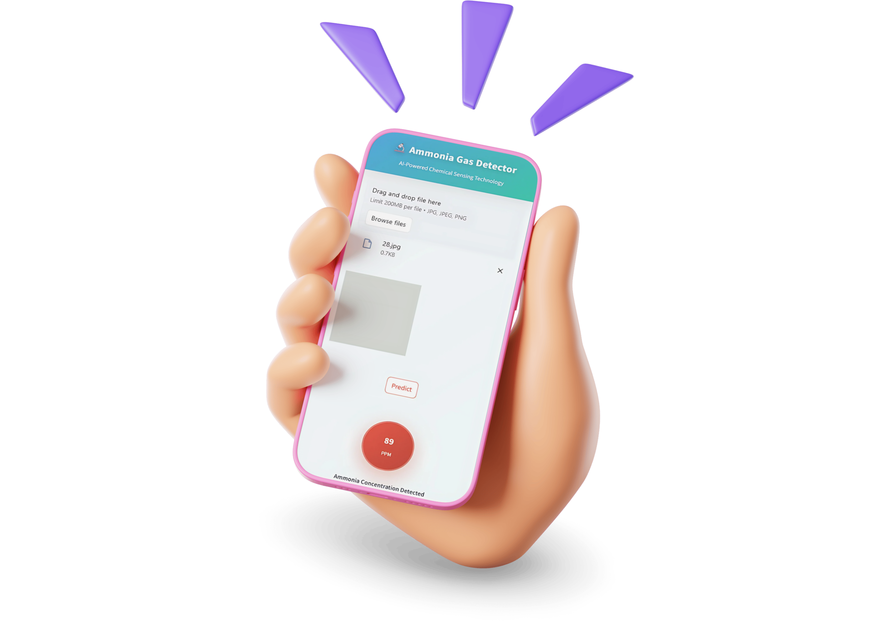

Project Overview
This project explores ammonia gas detection through color-responsive sensing materials supported by image analysis and artificial intelligence. The goal is to translate visible color changes into reliable analytical signals that can be processed in a practical and accessible workflow.
Sensor Monitoring Application
A web-based application was developed for real-time analysis of the sensor response toward ammonia gas. The application can be accessed through the direct link below or by scanning the QR code.
Application Access
Direct link: https://ammonia-gas-sensor.streamlit.app/
Open Sensor Monitoring ApplicationQR Code
Scan to open the application on your phone.
Application Workflow
- Open the application using the direct link or QR code.
- Upload the captured sensor image.
- The application automatically analyzes the color and intensity change.
- The corresponding ammonia concentration is displayed directly in ppm.
Features of the Developed Application
Automatic Prediction
Automatic concentration prediction from uploaded sensor images.
Real-Time Analysis
Fast image-based analysis for immediate sensor response interpretation.
ppm Output
Direct ammonia concentration display in ppm for practical use.
User-Friendly Interface
Simple workflow designed for easy access on desktop and mobile devices.
The following screenshot illustrates the automatic determination of ammonia concentration through image-based analysis using the developed sensing application.

Manuscript in Preparation
This article is now a brief preview of a research manuscript that will be submitted soon. Full experimental details, performance data, and the final citation will be added after submission and publication.
What the Upcoming Paper Will Cover
- Design of a sensing workflow for ammonia recognition based on color variation.
- AI-assisted analysis for converting image features into concentration-related predictions.
- Calibration and validation steps for improving reproducibility and analytical usability.
- Potential applications in environmental monitoring, laboratory practice, and smart sensing platforms.
Why This Work Matters
The work aims to bridge chemistry, sensing materials, and digital analysis in a format that supports faster interpretation and broader accessibility. It also reflects an ongoing research direction that connects classical analytical chemistry with modern AI tools.
Current Status
The study is being prepared for submission. Until then, this page remains intentionally concise and serves as a short research update rather than a full technical article.